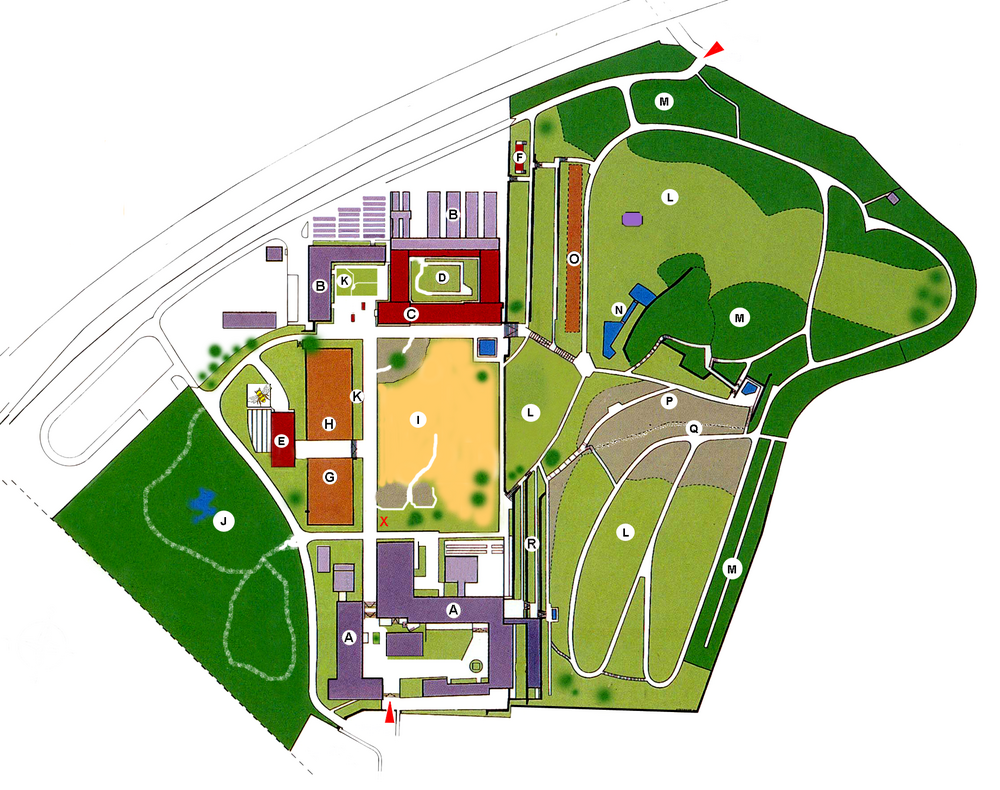

Karte
Info für LK
Kontakt
Zurück zur Karte
Willkommen bei den Lehrpfäden des Botanischen Gartens Würzburgs.
Bitte scannen Sie einen QR-Code am Eingang oder bei einer der Stationen, um einen Lehrpfad zu beginnen.
